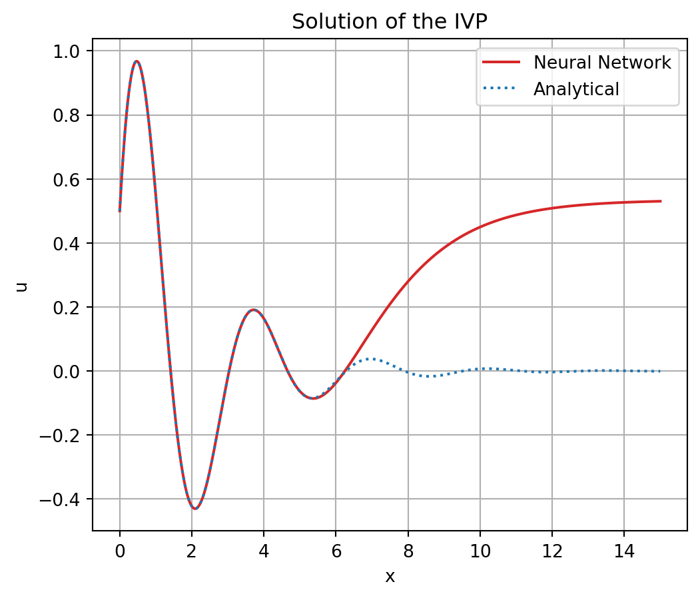
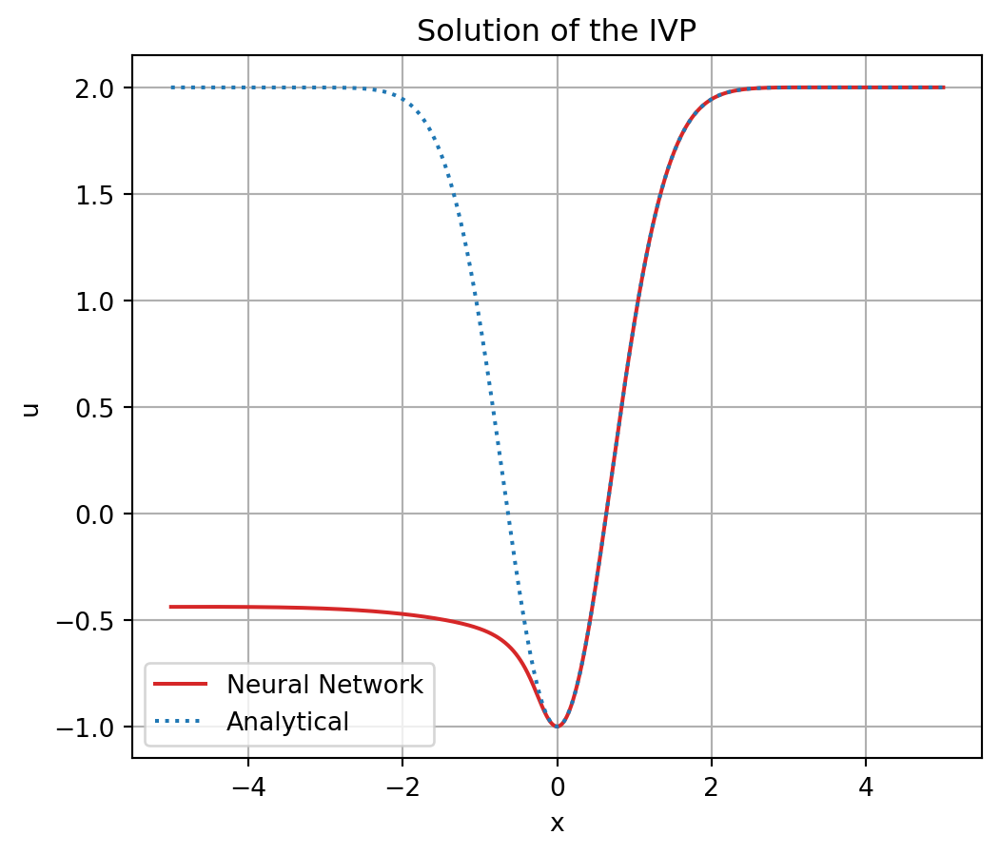

# for constructing, learning, using NNs
import torch
import torch.nn as nn
import torch.optim as optim
# for visualization
import matplotlib.pyplot as pltNeural Networks for Solving Ordinary Differential Equations
Deep Learning
Python
Differential Equations
I code from scratch a neural network based approach for numerically solving ordinary differential equations (ODE). I illustrate how this method functions by applying it to two examplary ODEs.
Introduction
In supervised learning settings, neural networks are employed to estimate conditional expectations or conditional probabilities. Some while ago, I read of a completely different application of neural networks. In fact, neural networks, can be used to numerically approximate the solutions of (ordinary) differential equations (Blechschmidt and Ernst 2021). Before implementing it from scratch in Python, I will first describe the setting and the general approach.
Setting
Let’s first introduce some notation: \(u(x)\) denotes an unknown function, \(u: I \subseteq \mathbb{R} \to \mathbb{R}\), of the independent variable \(x\). The \(j\)-th derivative of \(u\) evaluated at \(x\) is written as: \[u^{(j)}(x)=\frac{d^j \, u}{d \, x^j}(x), \; j \in \mathbb{N}.\] An ordinary differential equation (ODE) of order \(k\) is an equation of the following form: \[F \left( x, u(x), u^{(1)}(x), \dots, u^{(k)}(x) \right) = 0, \; \forall x \in I,\] where \(F\) is a given function, \(F: I \times \mathbb{R}^{k+1} \to \mathbb{R}\). So solving an ODE means finding a function \(u\) which satisfies the relationship specified by \(F\) between \(u\) and its first \(k\) derivatives, as well as \(x\). Under certain assumptions (see Picard-Lindelöf theorem), for such an ODE a unique solution is guaranteed to exist for given initial conditions. These initial conditions specify the value of the unknown function and its first \(k-1\) derivatives at a certain initial point \(x_0 \in I\), i.e. something like \[u(x_0)=u_0, \; u^{(1)}(x_0)=u_1, \; \dots, \; u^{(k-1)}(x_0)=u_{k-1}.\] An ODE together with initial conditions is called an initial value problem (IVP). While some IVPs can be solved analytically, in most cases the solution needs must be approximated numerically. For this purpose, neural networks can be utilized, although the setting differs greatly from the typical supervised learning setting.
General Approach
Let \(N_{\theta}(x)\) denote a feed forward multilayer perceptron parametrized by \(\theta\) (i.e. a vector containing all weights and biases), \(N_{\theta}: I \to \mathbb{R}\). If the activation functions employed by \(N_{\theta}\) are (infinitely) differentiable, \(N_{\theta}\) is – as a composition of (infinitely) differentiable functions – itself (infinitely) differentiable. Examples of (infinitely) differentiable activation functions are \(tanh\) and \(sigmoid\). Their infinite differentiability is the crucial property that makes feed forward multilayer perceptrons, unlike other highly flexible function approximators such as random forests, particularly well suited for representing solutions to IVPs. At any given \(x\), the value of the derivatives can be computed using backpropagation.
Finding a numerical approximation to the solution of an IVP using neural networks boils down to finding the parameter vector \(\theta^\star\) for which the ODE and the initial conditions are (approximately) satisfied, i.e. for which \[F \left( x, N_{\theta^\star}(x), N_{\theta^\star}^{(1)}(x), \dots, N_{\theta^\star}^{(k)}(x) \right) \approx 0, \; \forall x \in I, \] and \[N_{\theta^\star}(x_0) \approx u_0, \; N_{\theta^\star}^{(1)}(x_0) \approx u_1, \; \dots, \; N_{\theta^\star}^{(k-1)}(x_0) \approx u_{k-1}.\] with \[N_{\theta^\star}^{(j)}(x) = \frac{d^j \, N_{\theta^\star}}{d \, x^j}(x), \; j \in \mathbb{N}.\]
This can be achieved by minimizing a custom loss function \(L_{total}\) given a set of \(n \in \mathbb{N}\) sample points, \(x_i \in I, i=1,\dots, n\). \[\theta^\star = \underset{\theta}{\text{arg min}} \; L_{total}(\theta)\] The custom loss function \(L_{total}\) depending on \(\theta\) consists of two parts: \[L_{total}(\theta) = L_{ODE}(\theta) + L_{IC}(\theta),\] \[L_{ODE}(\theta) = \frac{1}{n} \sum_{i=1}^n \left[ F \left( x_i, N_{\theta}(x_i), N_{\theta}^{(1)}(x_i), \dots, N_{\theta}^{(k)}(x_i) \right) \right]^2,\] \[L_{IC}(\theta) = \left[ N_{\theta}(x_0) - u_0 \right]^2 + \sum_{j=1}^{k-1} \left[ N_{\theta}^{(j)}(x_0) - u_j \right]^2.\] \(L_{ODE}\) measures how far \(N_{\theta}\) is from satisfying the differential equation using mean squared error. \(L_{IC}\) measures how far \(N_{\theta}\) is from satisfying the initial conditions in terms of squared error. Note that the exact form of \(L_{ODE}\) and \(L_{IC}\) (and \(L_{ODE}\)) depends on the particular IVP under consideration. Technically, \(L_{total}(\theta)\) can be minimized using standard gradient based methods such as gradient descent or Adam.
Eventually, the approximate solution to the IVP is given by \(N_{\theta^\star}(x)\).
Implementation
Having described the general approach for solving ODEs using neural networks, in this section, I will implement it from scratch in Python and apply it to two different exemplary ODEs. These two ODEs have analytical solutions. This allows to assess the quality of the approximate solution by comparing it to the analytical one.
Define Neural Network
First, I define the neural network used for the approximation. It is a feed forward multilayer perceptron with one hidden layer that applies a \(sigmoid\) activation function between two fully connected linear layers.
class N(nn.Module):
def __init__(self, input_size, hidden_size, output_size):
super(N, self).__init__()
self.net = nn.Sequential(
nn.Linear(input_size, hidden_size),
nn.Sigmoid(),
nn.Linear(hidden_size, output_size)
)
def forward(self, x):
return self.net(x)First ODE
The first example is an IVP consisting of a second order ODE given by: \[ 4 u(x) + u^{(1)}(x) + u^{(2)}(x) = 0 \] and initial conditions \[ u(0) = 0.5, \; u^{(1)}(0)=2 .\]
Define Custom Loss Function
The custom loss function corresponding to the above IVP is computed as:
class Loss_IVP1(nn.Module):
def __init__(self):
super(Loss_IVP1, self).__init__()
def forward(self, model, x):
x = x.clone().detach().requires_grad_(True)
u = model(x)
# compute first derivative
du_dx = torch.autograd.grad(
outputs=u,
inputs=x,
grad_outputs=torch.ones_like(u),
create_graph=True
)[0]
# compute second derivative
d2u_dx2 = torch.autograd.grad(
outputs=du_dx,
inputs=x,
grad_outputs=torch.ones_like(du_dx),
create_graph=True)[0]
# compute loss function
loss_ODE = torch.mean((4*u + du_dx + d2u_dx2)**2)
loss_IC = (u[0] - 0.5)**2 + (du_dx[0] - 2)**2
loss_total = loss_ODE + loss_IC
return loss_totalConstruct Model, Loss and Optimizer
To ensure reproducibility of the subsequent steps, it is advisable to set a seed for the internal random number generator.
seed = 42
torch.manual_seed(seed)<torch._C.Generator at 0x2dac1e27130>I instantiate the neural network, the loss function to be minimized and the optimizer (here, I use Adam).
model = N(input_size=1, hidden_size=10, output_size=1)
criterion = Loss_IVP1()
optimizer = optim.Adam(model.parameters(), lr=1e-3)Set x-values
I decided to approximate the solution of the IVP on the interval \(I=[0,5]\). I choose \(n=100\) sample points evenly spread accross \(I\).
x = torch.linspace(0, 5, 100)[:, None]Training
Now that all necessary components are set up, training can start.
num_epochs = 10
steps_per_epoch = 3000
for epoch in range(num_epochs):
for step in range(steps_per_epoch):
loss = criterion(model, x)
optimizer.zero_grad()
loss.backward()
optimizer.step()
print(f"Epoch [{epoch+1}/{num_epochs}], Loss: {loss.item():.4f}")Epoch [1/10], Loss: 0.1181
Epoch [2/10], Loss: 0.0307
Epoch [3/10], Loss: 0.0052
Epoch [4/10], Loss: 0.0032
Epoch [5/10], Loss: 0.0008
Epoch [6/10], Loss: 0.0002
Epoch [7/10], Loss: 0.0001
Epoch [8/10], Loss: 0.0000
Epoch [9/10], Loss: 0.0000
Epoch [10/10], Loss: 0.0000Visualization
Once training is done, the learned, approximate solution can be compared to the analytical solution, which is known for this IVP. The analytical solution is given by: \[ u(x) = e^{-0.5x} \times \left[ 0.5 \times \cos\left(\frac{\sqrt{15}}{2} x \right) + \frac{3 \sqrt{15}}{10} \times \sin \left( \frac{\sqrt{15}}{2} x \right) \right] \]
Show code
x = torch.linspace(0, 15, 1000)[:, None]
with torch.no_grad():
u = model(x)
plt.figure(figsize=(6, 5))
plt.plot(x, u, color="C3", label="Neural Network")
plt.plot(x, torch.exp(-0.5*x)*(0.5*torch.cos(x*(15)**0.5/2)+3*((15)**0.5/10)*torch.sin(x*(15)**0.5/2)), color="C0", label="Analytical", linestyle="dotted")
plt.title("Solution of the IVP")
plt.xlabel("x")
plt.ylabel("u")
plt.legend()
plt.grid()
plt.show()
The above plot shows the approximate as well as the analytical solution. Apparently, on the chosen interval \(I=[0,5]\) the approximate solution matches the analytical solution. Outside of \(I\), the approximate solution deviates from the analytical one.
Second ODE
The second example is an IVP that consists of the following first ODE \[ u^{(1)}(x) - 2x (2-u) = 0 \] and the initial condition \[ u(0) = -1 .\]
Define Custom Loss Function
For this IVP, the custom loss function is computed as:
class Loss_IVP2(nn.Module):
def __init__(self):
super(Loss_IVP2, self).__init__()
def forward(self, model, x):
x = x.clone().detach().requires_grad_(True)
u = model(x)
# compute first derivative
du_dx = torch.autograd.grad(
outputs=u,
inputs=x,
grad_outputs=torch.ones_like(u),
create_graph=True
)[0]
# compute loss function
loss_DE = torch.mean((du_dx - 2*x*(2-u))**2)
loss_initial = (u[0] + 1)**2
loss_total = loss_DE + loss_initial
return loss_totalConstruct Model, Loss and Optimizer
Again, a seed is set for the internal random number generator.
seed = 42
torch.manual_seed(seed)<torch._C.Generator at 0x2dac1e27130>The neural network, the loss function to be minimized and the optimizer are instantiated.
model = N(input_size=1, hidden_size=10, output_size=1)
criterion = Loss_IVP2()
optimizer = optim.Adam(model.parameters(), lr=1e-3)Set x-values
As previously, the solution of the IVP is approximated on the interval \(I=[0,5]\) with \(n=100\) sample points evenly spread accross \(I\).
x = torch.linspace(0, 5, 100)[:, None]Training
The setup is finished and the training can begin.
num_epochs = 10
steps_per_epoch = 3000
for epoch in range(num_epochs):
for step in range(steps_per_epoch):
loss = criterion(model, x)
optimizer.zero_grad()
loss.backward()
optimizer.step()
print(f"Epoch [{epoch+1}/{num_epochs}], Loss: {loss.item():.4f}")Epoch [1/10], Loss: 0.3274
Epoch [2/10], Loss: 0.0380
Epoch [3/10], Loss: 0.0141
Epoch [4/10], Loss: 0.0080
Epoch [5/10], Loss: 0.0025
Epoch [6/10], Loss: 0.0003
Epoch [7/10], Loss: 0.0000
Epoch [8/10], Loss: 0.0000
Epoch [9/10], Loss: 0.0000
Epoch [10/10], Loss: 0.0000Visualization
For this IVP, the analytical solution is given by: \[ u(x) = 2 - 3 \, e^{-x^2}. \]
Show code
x = torch.linspace(-5, 5, 1000)[:, None]
with torch.no_grad():
u = model(x)
plt.figure(figsize=(6, 5))
plt.plot(x, u, color="C3", label="Neural Network")
plt.plot(x, 2 - 3*torch.exp(-x**2), color="C0" , label="Analytical", linestyle="dotted")
plt.title("Solution of the IVP")
plt.xlabel("x")
plt.ylabel("u")
plt.legend()
plt.grid()
plt.show()
Also for the second exemplary IVP, on the interval \(I=[0,5]\) the approximate solution closely aligns with the analytical solution, whereas outside of it both deviate.
Conclusion
The examples presented above demonstrate that neural networks are a powerful tool for numerically approximating the solutions of ODEs. This approach can also be extended for solving partial differential equations.
References
Blechschmidt, Jan, and Oliver G Ernst. 2021. “Three Ways to Solve Partial Differential Equations with Neural Networks—a Review.” Gamm-Mitteilungen 44 (2): e202100006.
Lagaris, Isaac E, Aristidis Likas, and Dimitrios I Fotiadis. 1998. “Artificial Neural Networks for Solving Ordinary and Partial Differential Equations.” IEEE Transactions on Neural Networks 9 (5): 987–1000.
Papa, Joe. 2021. PyTorch Pocket Reference. " O’Reilly Media, Inc.".